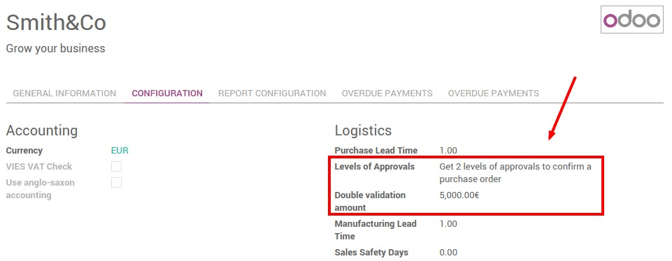
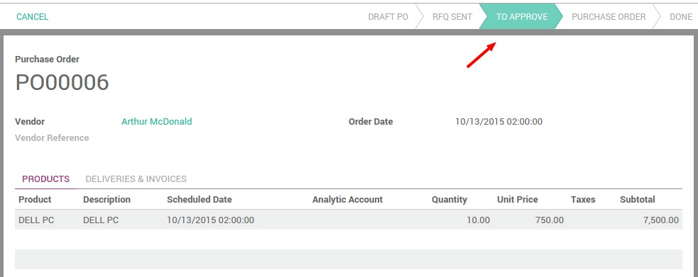
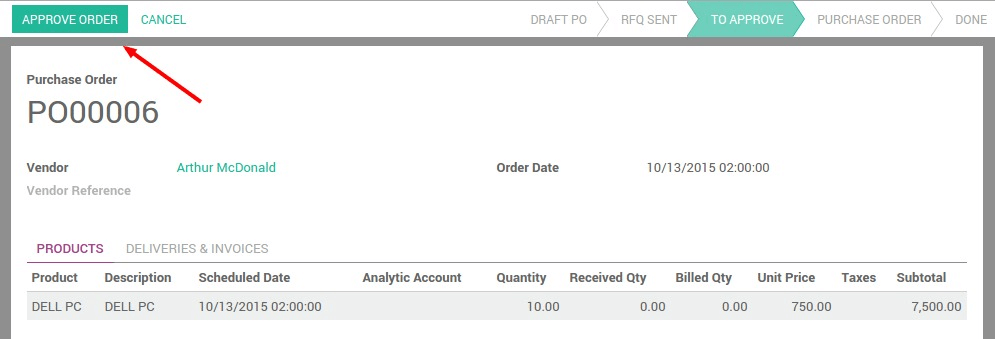

两步验证设置
Double validation on purchases forces a validation when the purchased amount exceeds a certain limit.
Install Purchase Management module and then go to General Settings to configure the company data.
Set here the amount limit for second approval and set approval from manager side.
过程
Logged as a purchase user, create a purchase order for more than the amount set above, and confirm it. The purchase order is set in a state To Approve
经理看到要验证的订单并确认最后的订单。
一旦确认，采购订单就按照正常的步骤。